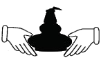

Page 1 of 7
Society Logo

Posted:
Fri Mar 20, 2009 11:59 amby IrishWhiskeyChaser
Pleas submit your Society Logo ideas.
We are looking for something that is not too complicated or intricate which can be used for branding etc.
So get your thinking caps and let the creative juices flow

If you are not much good at creating graphics like me just do a sketch.
After that you can scan your image then save a copy as .jpg or something similar.
Set up an account in a free picture hosting site. Upload you picture and it will give you an IMG link that you can use to post on here.
I use photobucket but there are plenty more I think frapper is another well-known one. A quick google will find them.
Look forward to seeing your ideas.
Re: Society Logo
Posted:
Fri Mar 20, 2009 12:08 pmby IrishWhiskeyChaser
This is one of my ideas .... excuse the roughness of sketch but I am not exactly an artist.

Re: Society Logo
Posted:
Fri Mar 20, 2009 12:22 pmby DavidH
I'm no graphics artist so I've just mashed two images together to give the basic idea. This one was inspired by the Claddagh ring.
- 
- logo.png (5.75 KiB) Viewed 4501 times
Re: Society Logo
Posted:
Fri Mar 20, 2009 12:23 pmby IrishWhiskeyChaser
Another idea from
Cathach another Galway member was to incorporate the 4 provinces crest.

Re: Society Logo
Posted:
Sun Mar 22, 2009 12:09 amby varizoltan
Hi everyone
here is some of my idea of logos for the society
i think it is simple but show what we are, green-orange, three still and the name
colors can be adjusted or we may insert Dublin to it too
please post reply if like it or not
Zoltan
Re: Society Logo
Posted:
Sun Mar 22, 2009 8:36 pmby varizoltan
Hi again
i tried to improve the colours a bit to be more like an irish flag, and also done a plain version
please post comment if like it or not
Re: Society Logo
Posted:
Sun Mar 22, 2009 8:56 pmby Michael Foggarty

- iwslogo.jpg (32.07 KiB) Viewed 4427 times
Re: Society Logo
Posted:
Sun Mar 22, 2009 10:07 pmby Michael Foggarty
I like to Zoltans Black and white design
Re: Society Logo
Posted:
Mon Mar 23, 2009 12:05 amby DavidH
Michael Foggarty wrote:I like to Zoltans Black and white design
I like it too. In its favour it will look good in any situation: on a website, etched on a glass, printed on a bottle label, in black-and-white on a letterhead...
Although I like how they look, I have a slight reservation about the three stills. Is it meant to imply triple-distillation?
Re: Society Logo
Posted:
Mon Mar 23, 2009 12:42 amby Willie JJ
I like Adrian's Celtic cross, but it may be too complex for a small logo. Zoltan's has the merit of simplicity that will work at all sizes. Is there a problem with the three stills implying triple distillation David?
Re: Society Logo
Posted:
Mon Mar 23, 2009 1:31 amby varizoltan
yes dave, the three still meant triple distilled
Re: Society Logo
Posted:
Mon Mar 23, 2009 1:37 amby DavidH
Willie JJ wrote:Is there a problem with the three stills implying triple distillation David?
Just that whenever I tell someone I like Irish whiskey they often say something like "Oh, I don't know much about it, but it's triple-distilled, right, whereas Scotch is double-distilled?" IDL has had great success in putting over that line, that Irish whiskey is smoother, because it's triple-distilled.
But one of the society's aims is the spreading of knowledge about Irish whiskey so my question is should we put the myth on the logo?
Also, IDL hasn't been very nice to Cooley and the harping on about triple-distillation is part of that.
I'm just posing the question. I'm not sure what I think myself. It's a very nice logo.
Re: Society Logo
Posted:
Mon Mar 23, 2009 11:45 amby IrishWhiskeyChaser
I agree with the triple distillation issue also but that is only a small thing and we can change accordingly.
We could just say that the 3 stills represent the 3 distilleries Bushmills, Cooley & Midleton.Or instead of stills have barrels.
However we have to take into consideration of the new distillery under development which looks like a real runner, so maybe 4 would be better.
Other than that I'd have no problem with it.
I like the cladagh idea too but we'd need to work on it ... it is a good interesting idea which would be quite unique.
In relation to my design it is actually quite easy to reproduce. I have been onto Glencairn, Polo shirt embroiders and badge makers and they all say it would be easy to do and require no extra tooling than on what is thought to be a more simple design.
But we need more ideas ....
Re: Society Logo
Posted:
Mon Mar 23, 2009 1:00 pmby stephen leddy
I concur that the logo should include a graphic/reference that is synonomous with Irish Whiskey. If the Scots have the term ' single malt' associated with them then the first question that should be addressed with this issue is what specific terms define Irish Whiskey....Is the 'pot still' reference more Irish than not?
Re: Society Logo
Posted:
Mon Mar 23, 2009 4:51 pmby IrishWhiskeyChaser
I don't know if we need to get too worried or caught up in imagery .... all we need is a nice classic logo that will not date too much.
Here is the Scotch Malt Whiskey Society's logo & banner as an example


Re: Society Logo
Posted:
Tue Mar 24, 2009 4:12 pmby Willie JJ
DavidH wrote:But one of the society's aims is the spreading of knowledge about Irish whiskey so my question is should we put the myth on the logo?
Also, IDL hasn't been very nice to Cooley and the harping on about triple-distillation is part of that.
I take those points, but given that at some point, although maybe not very soon, we are going to want to deal with IDL for casks, we don't really want to upset them either.
Also, if we put 4 stills on the logo then there is always the danger (hopefully) that a 5th still will open somewhere, (Shouldn't we count the wee still at Kilbeggan anyway?). So maybe the stills design is a bit problematic, although I liked its simplicity.
What about a historical reference? Is there some iconic image from the past of Irish Whiskey that could be adopted?
Re: Society Logo
Posted:
Tue Mar 24, 2009 5:26 pmby DavidH
Willie JJ wrote:Also, if we put 4 stills on the logo then there is always the danger (hopefully) that a 5th still will open somewhere, (Shouldn't we count the wee still at Kilbeggan anyway?).
We should, and we should count the Bunratty Potcheen still too

How about a sprig of barley (or whatever the agricultural term is)?
Re: Society Logo
Posted:
Tue Mar 24, 2009 7:29 pmby JohnM
Zoltan's black and white one looks good to me. What about that, with a "sprig" of barley instead of the stills?
Re: Society Logo
Posted:
Tue Mar 24, 2009 7:44 pmby Michael Foggarty
what about zoltan black and white one but instead of the stills an image of the map of Ireland split into the 4 provinces like on the Paddy bottle but without the colour.
Re: Society Logo
Posted:
Tue Mar 24, 2009 7:52 pmby IrishWhiskeyChaser
Michael Foggarty wrote:what about zoltan black and white one but instead of the stills an image of the map of Ireland split into the 4 provinces like on the Paddy bottle but without the colour.
Not a bad idea ... and one tiny potstill in the middle
We still need to get everybody involved in this though and see what other ideas are out there.
Re: Society Logo
Posted:
Sun Mar 29, 2009 7:48 pmby DavidH
This is rather close to an existing whiskey society logo...

We need something undeniably original. Otherwise we'll be getting lessons in trademark law from solicitors.
Re: Society Logo
Posted:
Sun Mar 29, 2009 9:27 pmby IrishWhiskeyChaser
Re: Society Logo
Posted:
Sun Mar 29, 2009 9:38 pmby IrishWhiskeyChaser
As I said not good at doing these logo's but some else may have the means....
I had a thought of the a cask end when stenciled with the distillery info just amend to our society.
I have a picture of some springbank barrels I took at the distillery. There could be an illistration in the centre also if desired.

Re: Society Logo
Posted:
Mon Mar 30, 2009 2:51 pmby John
In terms of differentiation, could I suggest that, whatever logo design we settle on, that the lettering: 'Irish Whiskey Society' and 'Est. 2009' be in some form of Celtic script? It might, at a glance, help to set us apart.
Cheers,
John.
Re: Society Logo
Posted:
Mon Mar 30, 2009 3:32 pmby IrishWhiskeyChaser
Just an aside ... I remember someone said that they would like the society name in Irish also.
There are a few ways to look at this.
Cumann Uisce beatha na hÉireann
Which means The Whiskey Society of Ireland
Cumann Uisce beatha Éireannach
means The Irish Whiskey Society where Irish is a noun (The Irish .... Whiskey Society)
Cumann Usice beatha gaelach
The Irish Whiskey Society where Irish is a verb and Whiskey is a noun(The ... Irish Whiskey ... Society)